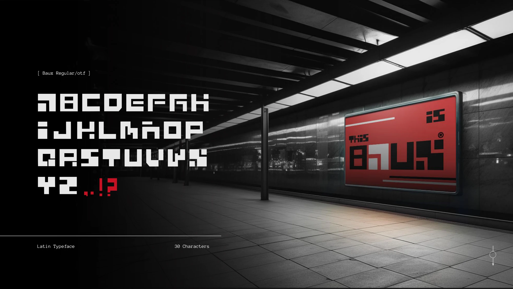
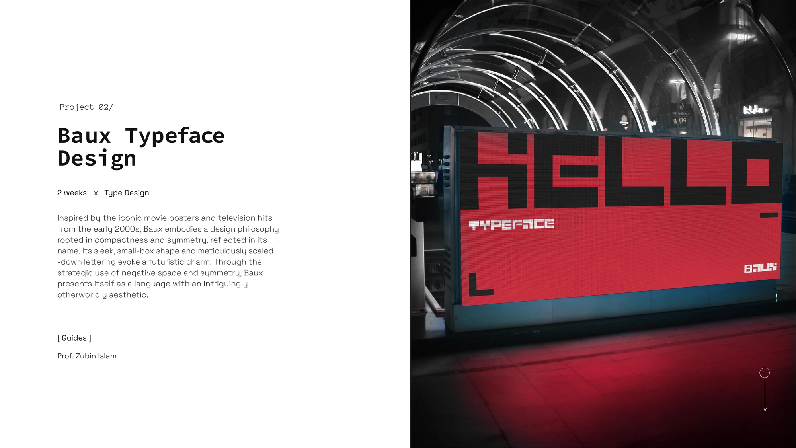
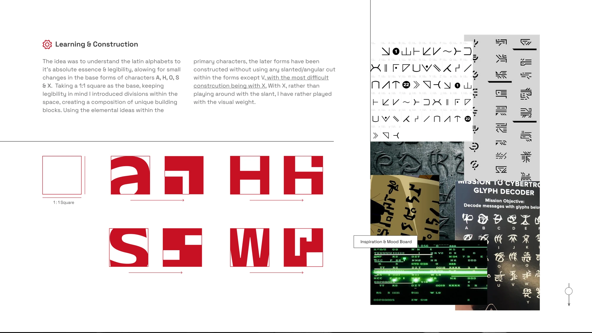
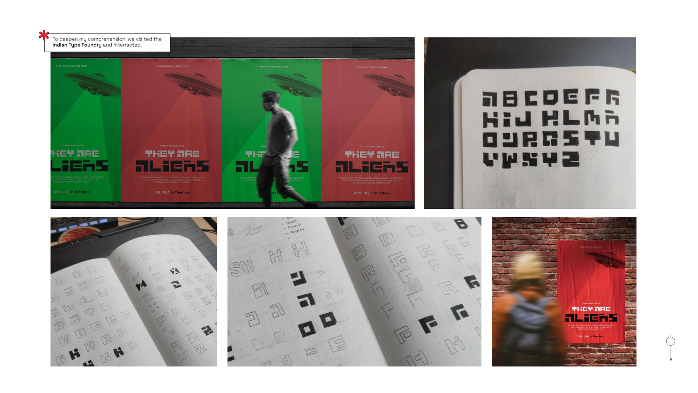
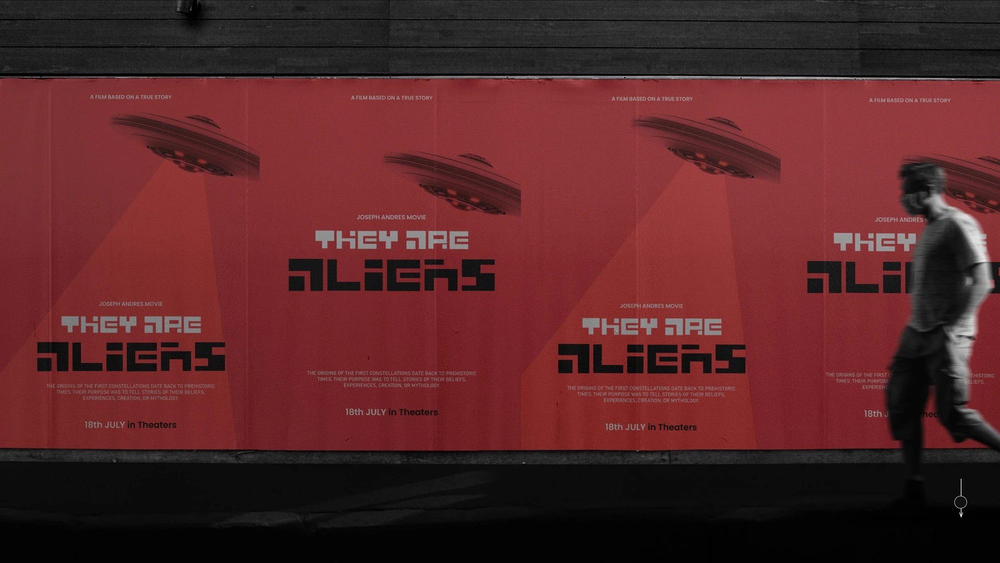

Baux Typeface
A 30-character Latin display typeface, built from a 1:1 square with no curves and no tangents.

Overview
A typeface that looks like it arrived from somewhere else.
Brief
Create a typeface that could hold its own on a movie poster or a brand mark, with an otherworldly look.
My part
Type designer, letterer and character sketcher. I drew every glyph in Adobe Illustrator and finalised the set in Glyphs.
Result
A complete 30-character Latin typeface, the full A-Z alphabet plus punctuation, ready to use as a display font.
Context
What can an alien-ish font look like?
Inspired by iconic movie posters and television hits from the early 2000s, Baux embodies a design philosophy rooted in compactness and symmetry. Its sleek, small-box shape and meticulously scaled-down lettering evoke a futuristic charm. Through the strategic use of negative space and symmetry, Baux presents itself as a language with an intriguingly otherworldly aesthetic.
The aim was to create a typeface that could hold its own on a movie poster or a brand mark, something that looked like it arrived from somewhere else. Crafted for symmetry and uniformity, the characters are devoid of tangents or curves, evoking an almost alien and otherworldly appearance.

Project overview.
Construction
Every character is built from a single square.
The construction logic started with a single constraint: a 1:1 square as the base unit for every character.

Learning and construction: the 1:1 square, and the letters A, H, S and W broken into blocks.
Process
Drawn by hand, then tried on a poster.
The letters were worked out in sketchbooks and drawn as a full alphabet, and the set was tried on posters. To deepen comprehension, we visited the Indian Type Foundry and interacted.

Sketches, the alphabet in the notebook, and the first poster tests.
Application
Made for headlines at large sizes.
Baux is suited for creating attention-grabbing headlines, logos, and prominent text elements in advertising, packaging, signage, branding, and web design. Its compact form and high contrast make it effective at large display sizes where its construction details are visible.

Baux on a film poster: They Are Aliens.
Outcome
A 30-character Latin typeface.
The final output was a complete Latin typeface of 30 characters: the full A-Z alphabet plus punctuation. Every glyph was drawn in Adobe Illustrator and finalized in Glyphs, ready for use as a display font.
Takeaways
What I took away.
- Constraints produce character. The no-curves, no-tangents rule was the hardest part of the project and the reason Baux looks like itself. Removing options forced invention.
- Legibility and novelty are in tension, and the designer's job is to negotiate between them. Every character needed to be readable as a letter while still feeling alien. That negotiation happened glyph by glyph.
- The 1:1 square grid made consistency automatic. When every glyph shares the same underlying geometry, the set coheres without forcing it. Grid discipline in type design works the same way it does in layout.
- Type skills are interconnected. Font metrics, glyph drawing, type anatomy, form sketching, and form construction are not separate subjects. Seeing them that way changed how I approach letterforms in all design work since.